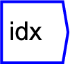
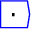
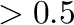
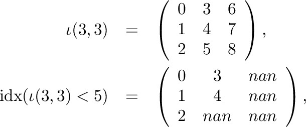

Next: gather
Up: Tensor operations
Previous: outer product
Contents

The operator can be placed on the canvas in two ways:
- From the Tensor Operations (``tensor'') toolbar

;
or
- By typing the letters ``index'' on the canvas and then pressing the
Enter key.
Returns the index within the hypecube where the input is true (ie
). For example, where

Note that the output array has the same shape as the input, with unused
values padded with NANs (missing value).
Dimension and argument parameters are unused.